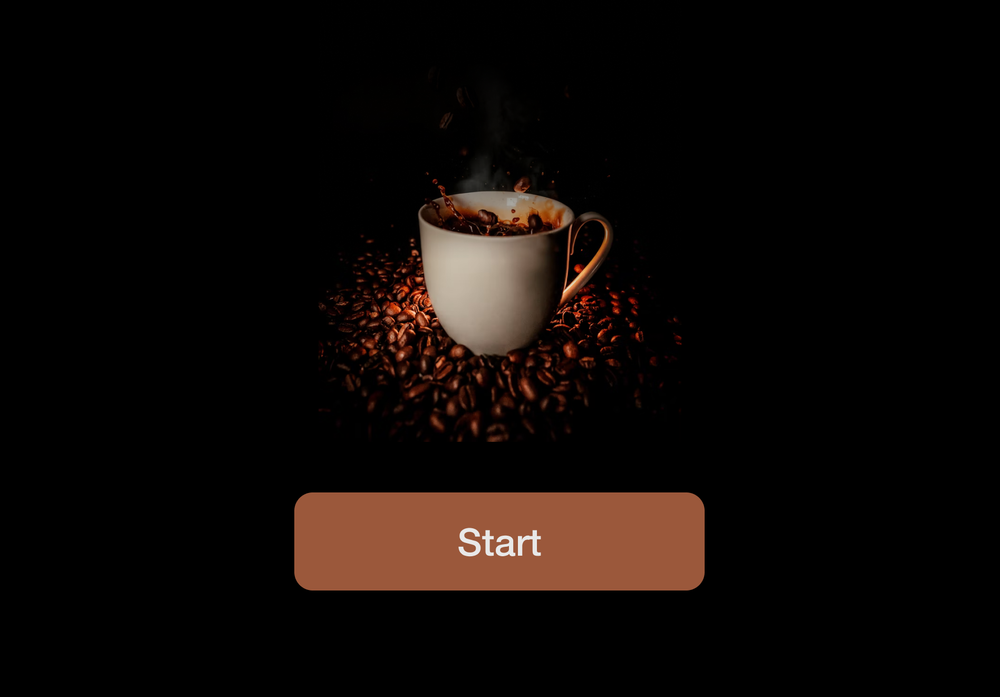
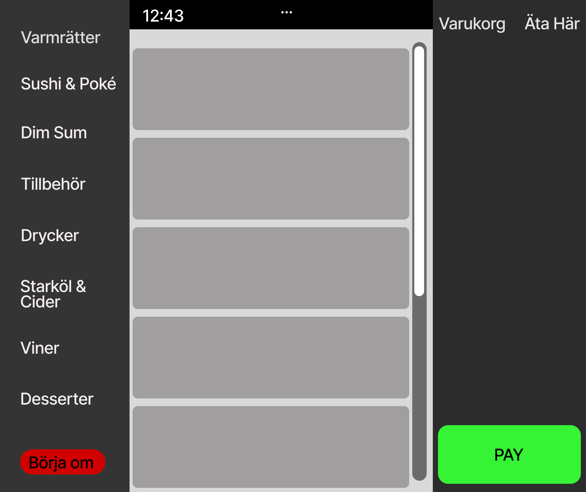
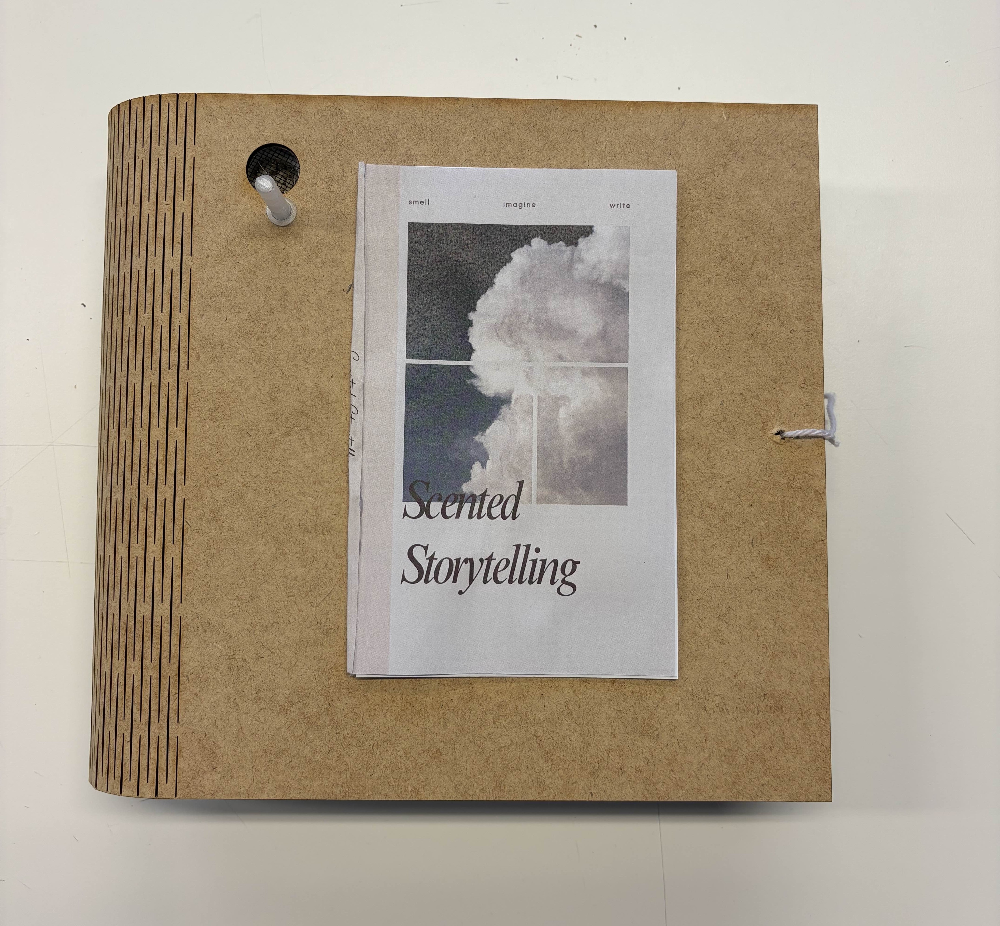
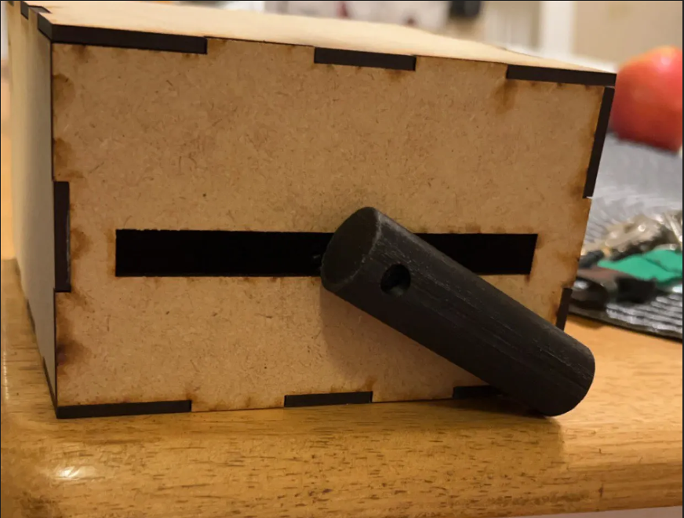

Coffee Machine - Done Right
A coffee-machine interface redesign focused on guidance, user feedback, and reducing interaction uncertainty.
I design intuitive interfaces and interactive experiences with a focus on clarity and usability
Designed for quick scanning, clear expectations, and recognition over recall.
I enjoy improving digital experiences by finding where users hesitate, get confused, or lose momentum, then redesigning those moments into something clearer and more supportive. My work sits at the intersection of interface design, interaction design, user research, and prototyping.
Each case study explains the problem, process, and usability improvements in a clearer structure.

A coffee-machine interface redesign focused on guidance, user feedback, and reducing interaction uncertainty.

A self-ordering restaurant interface improved through clearer pricing, better navigation, and stronger error feedback.

An experimental journaling concept exploring how scent cues can support reflection, memory, and more immersive writing rituals.

A broader set of concept explorations covering Arduino, 3D-printed prototyping, and interactive low-fidelity design work.